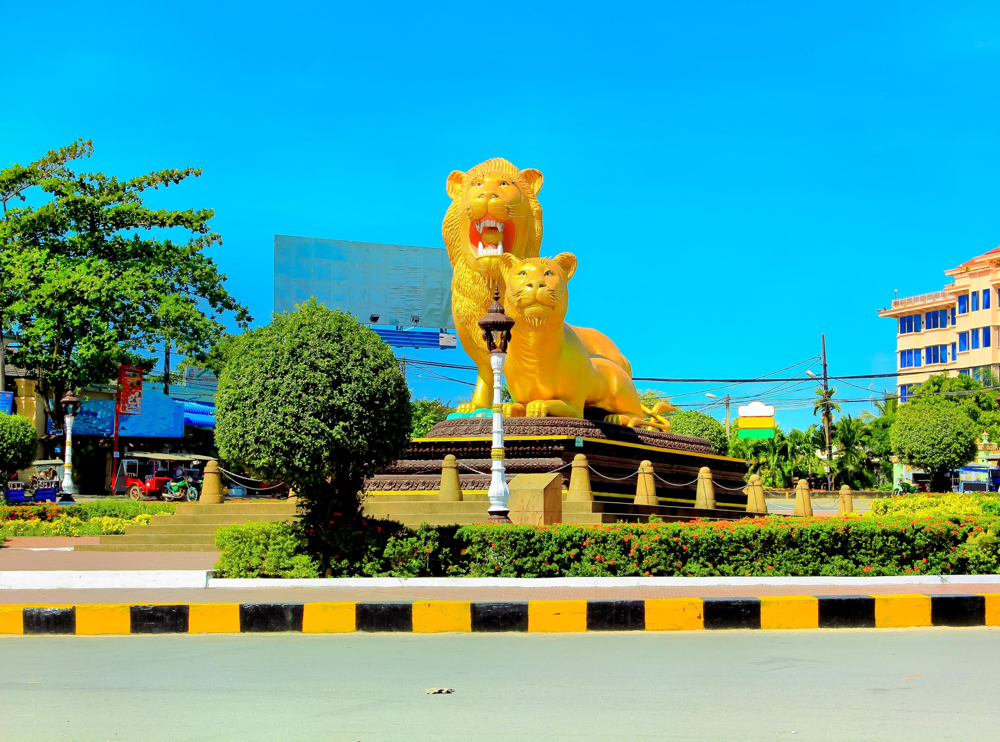
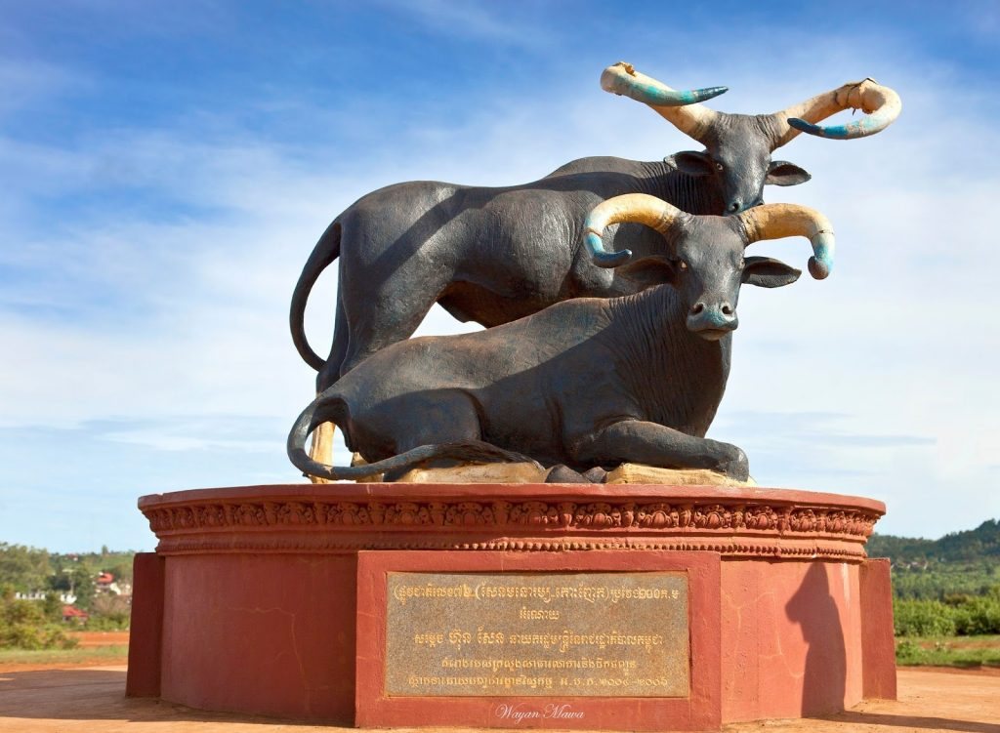
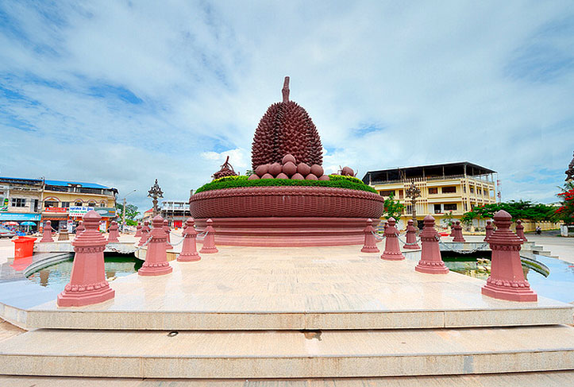

WELCOM TO CAMBODIA
King Of Cambodia
Angkor Wat is temple Complex in Cambodia and Largest religious monument in the world...
View NowCapital
Phnom Penh

Phnom Penh is the biggest and wealthiest city in Cambodia. It's also the cultural, commercial and political centre of the country. Covering an area of 345 sq km, Phnom Penh is located in the south-central region of Cambodia, at the confluence of the Tonle Sap, Mekong and Bassac rivers.
see moreCity
Krong siemreap
\
Siem Reap province is located in northwest Cambodia. It is the major tourist hub in Cambodia, as it is the closest city to the world famous temples of Angkor (the Angkor temple complex is north of the city).
see moreShihanouk ville
Sihanoukville is a colourful but tragic upstart. A mere fifty years ago, a French-Cambodian construction carved a camp out of the jungle and started building the first deep-sea port of a newly independent Cambodia. Named Sihanoukville in 1964 after the ruling prince of Cambodia,
see moreProvince
MONDOLKIRI
\ Mondulkiri Province is the largest province in Cambodia. It is also the most sparsely populated province. It is located to the far east of Cambodia, bordering with Vietnam to the east and south. It is located west of Kratie Province and south of Ratanakiri Province and South-east of Stung Treng. The province was established in 1961.
see moreKAMPOT
\ Kampot Province is the one of attractive travel in Cambodia there have many thing to do and see a lot that have distance about 148 kilometer from Phnom Penh City. Kampot Province is a south and west Province of Cambodia. The borders the provinces of Koh Kong and Kampong Speu to the north, Takeo and Kep and Vietnam to the east and Sihanoukville to the west.
see moreKOMPONG CHHNANG

Kampong Chhnang is located at the heart of Cambodia. Its bordering Kampong Thom to the North, Kampong Cham to the East, Kampong Speu to the South and Pursat to the West. This province is not only at the fertile and almost ever-wet heart of Cambodia, but also just a 91km ride from Phnom Penh, so it's a quick jaunt up.
see moreABOUT
Cambodia country on the Indochinese mainland of Southeast Asia. Cambodia is largely a land of plains and great rivers and lies amid important overland and river trade routes linking China to India and Southeast Asia. The influences of many Asian cultures, alongside those of France and the United States, can be seen in the capital, Phnom Penh, one of a handful of urban centres in the largely rural country.For 2,000 years Cambodia’s civilization absorbed influences from India and China and, in turn, transferred them to other Southeast Asian civilizations. From the Hindu-Buddhist kingdoms of Funan and Chenla (1st–8th century) through the classical age of the Angkor period (9th–15th century), it held sway over territories that are now part of Thailand, Following the 1991 Paris Peace Accords, the United Nations Transitional Authority in Cambodia (UNTAC) cleared the way for the country’s first national election in 1993. The political transition between 1992 and 1997 was characterized by instability, political conflict, corruption, pre-electoral violence and the repression of opposition forces. The coalition government was unstable from the beginning. The two coalition parties at that time – the royalist FUNCINPEC party and the post-socialist Cambodian People’s Party (CPP) - were deeply divided and shifting factions within the parties further eroded the stability of the coalition. In 1997, FUNCIPEC leader Prime Minister Ranariddh was ousted by CPP-leader, Co-Prime Minister Hun Sen, in a coup d’état.